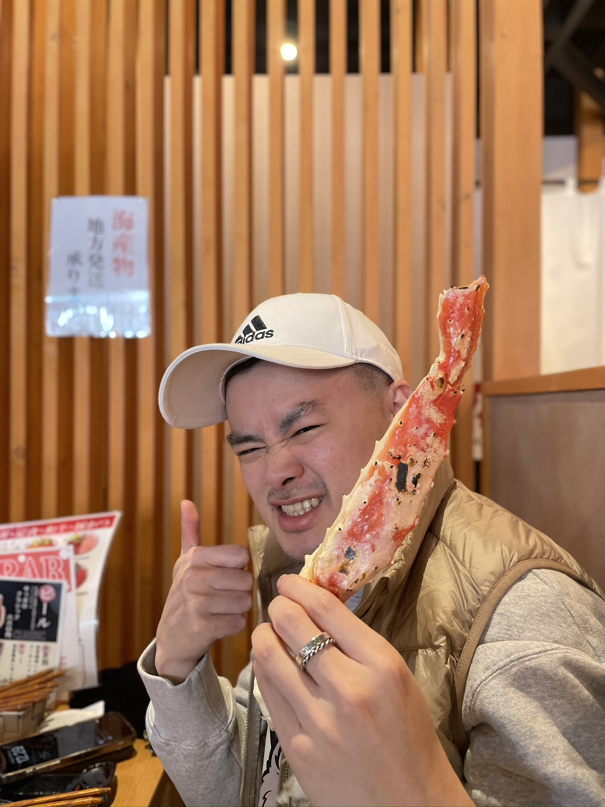

Sapporo / 19 Jan 2025 / Lunch
Fresh salmon sashimi and a juicy king crab leg.
I forgot the name of this lunch place, but not the food. After Moerenuma Park, this was exactly the kind of Hokkaido seafood meal that made sense: fresh, simple, and satisfying.
Personal Review
The salmon was fresh, the crab was juicy
The salmon sashimi tasted very fresh, with that clean, rich flavor that makes a simple bowl feel special. The king crab leg was also a highlight: nice, juicy, and fun to eat.
I wish I remembered the restaurant name, but this is still a meal worth keeping in the trip record. Sometimes the exact place fades first, but the taste stays.
Worth it? Yes, especially as a seafood lunch in Sapporo after a cold morning outside.
Back to Sapporo trip note

